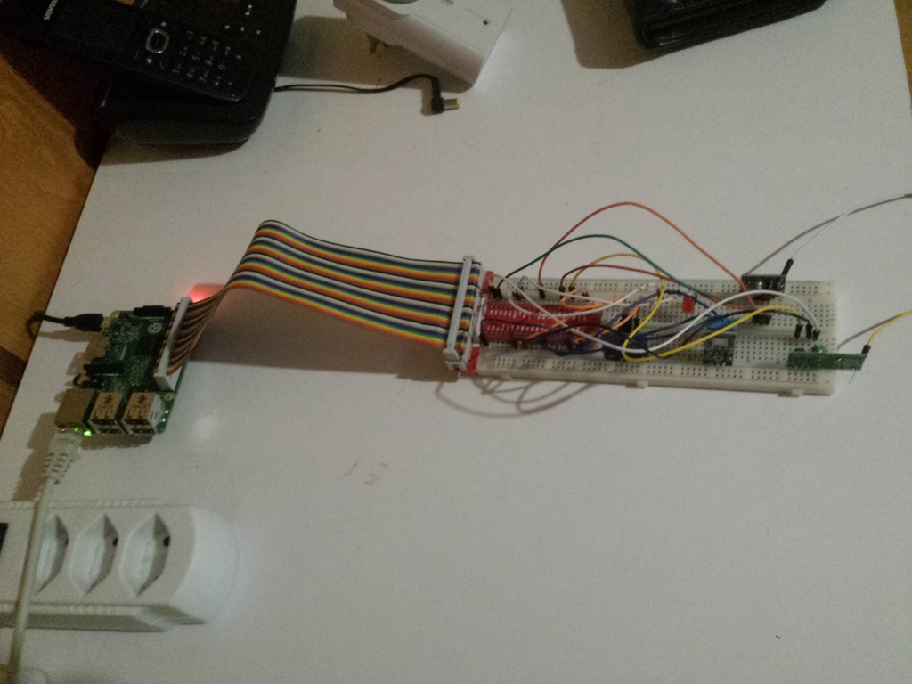
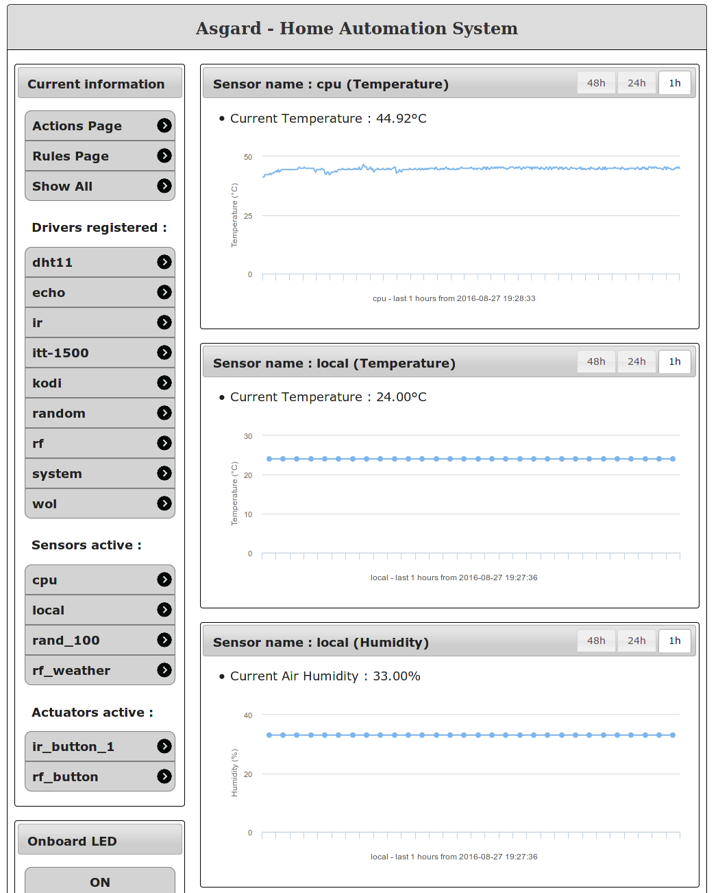
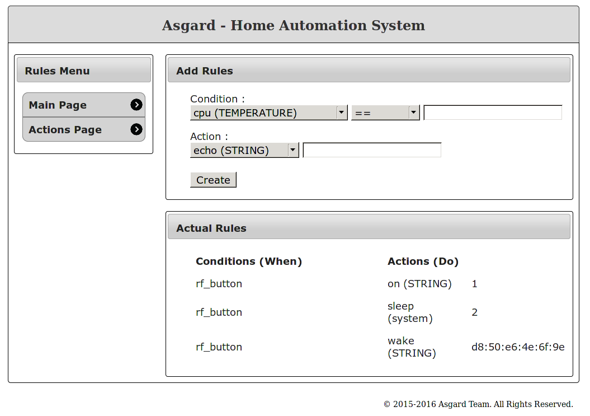

Asgard: Home Automation project
Posted:
I have updated my asgard project to make it finally useful for me, so I figured I'd present the project now.
Asgard is my project of home automation based on a Raspberry Pi. I started this project after Ninja Blocks kickstarter company went down and I was left with useless sensors. So I figured why not have fun creating my own :P I know there are some other projects out there that are pretty good, but I wanted to do some more low level stuff for once, so what the hell.
Of course, everything is written in C++, no surprise here. The project is built upon a server / drivers architecture. The drivers and the server are talking via network sockets, so they can be on different machines. The server is displaying the data it got on a web interface and also provide a way to trigger actions of drivers either from the web interface or through the integrated rules engine. The data are stored in a database, accessed with CPPSqlite3 (probably going to be replaced by sqlcpp11) and the web server is handled with mongoose (with a c++ interface).
I must mention that most of the web part of the project was made by a student of mine, Stéphane Ly, who work on it as part of his study.
Here is a picture of the Raspberry Pi system (not very pretty ;) ):
I plan to try to fit at least some of it on a nicer box with nicer cables and such. Moreover, I also plan to add real antennas to the RF transmitter and receiver, but I haven't received them so far.
Sensors
asgard support several sensors:
- DHT11 Temperature/Humdity Sensor
- WT450 Temperature/Humdity Sensor
- RF Button
- IR Remote
- CPU Temperature Sensor
You can see the sensors data displayed on the web interface:
Actions
There are currently a few actions provided by the drivers:
- Wake-On-Lan a computer by its MAC Address
- ITT-1500 smart plugs ON and OFF
- Kodi actions: Pause / Play / Next / Previous on Kodi
Here are the rules engine:
My home automation
I'm currently using this system to monitor the temperature in my appartment. Nothing great so far because I don't have enough sensors yet. And now, I'm also using a wireless button to turn on my power socket, wait 2 seconds and then power on my Kodi Home Theater with wake on lan.
It's nothing fancy so far, but it's already better than what I had with Ninja Blocks, except for the ugly hardware ;).
Future
There are still tons of work on the project and on integration in my home.
- I'm really dissatisfied with the WT450 sensor, I've ordered new Oregon sensors to try to do better.
- I've ordered a few new sensors: Door intrusion detector and motion detector
- The rules system needs to be improve to support multiple conditions
- I plan to add a simple state system to the asgard server
- There are a lot of refactorings necessary in the code and
However, I don't know when I'll work on this again, my work on this project is pretty episodic to say the least.
Code
The code is, as always, available on Github. There are multiple repositories: all asgard repositories. It's not that much code for now, about 2000 lines of code, but some of it may be useful. If you plan to use the system, keep in mind that it was never tested out of my environment and that there is no documentation so far, but don't hesitate to open Issues on Github if you have questions or post a comment here.